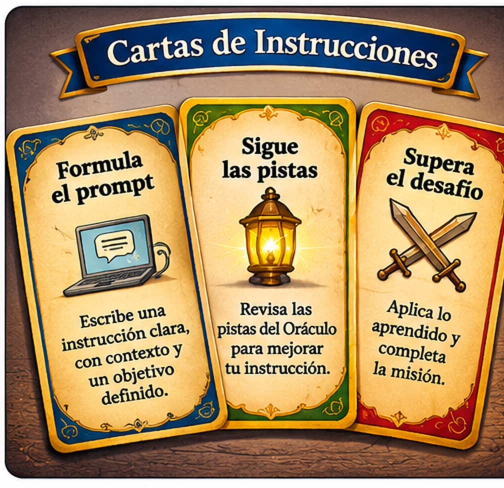

«Háblame sobre el cuidado del agua».
No especifica para quién es la explicación ni qué información debe incluir.
Aprendiz: el Oráculo Real puede ofrecer información valiosa, pero necesita recibir instrucciones claras y bien pensadas. Una solicitud imprecisa puede producir una respuesta demasiado general o poco útil.
Tu tarea será aprender el arte de formular prompts: instrucciones que indican a la inteligencia artificial qué necesitas, en qué contexto y cómo esperas recibir la respuesta.
Un prompt es una instrucción o solicitud que damos a una herramienta de inteligencia artificial para orientar la respuesta. Para que sea útil, considera estos tres elementos:
Recuerda: no existe una fórmula única para todos los casos. Lo importante es expresar con claridad lo que necesitas y aportar la información necesaria.

Lee las dos instrucciones. Después selecciona la que probablemente permitirá obtener una respuesta más útil para la situación planteada.
«Háblame sobre el cuidado del agua».
No especifica para quién es la explicación ni qué información debe incluir.
«Explica a estudiantes de tercero de secundaria tres acciones para ahorrar agua en el colegio. Organiza la respuesta en una lista numerada e incluye una breve justificación de cada acción».
Define objetivo, contexto y formato esperado.
Ahora es tu turno. Redacta dos prompts sobre situaciones de tu interés. Cada uno debe incluir un objetivo claro, contexto y resultado esperado. Después, elige uno y mejóralo.
Elige uno de los dos prompts que escribiste. Revisa si es suficientemente claro, añade el contexto que falte y precisa el resultado que esperas obtener.
«Una instrucción clara me ayuda a comprender qué necesitas. Si me indicas el objetivo, el contexto y el tipo de respuesta que esperas, podré orientar mejor mi respuesta. Aun así, recuerda revisar la información que te proporcione».
Selecciona uno de tus prompts y compártelo con tu docente para realizar una demostración con la herramienta de inteligencia artificial que él o ella gestione. Después, observa si la respuesta corresponde a tu objetivo y al formato solicitado.
Completa y revisa la ficha. Esta será la evidencia de tu misión y podrás imprimirla o guardarla como PDF para entregarla al docente.
Misión 2 · El lenguaje de los sabios
No incluyas contraseñas, direcciones, datos personales sensibles ni información privada en tus instrucciones.
Has aprendido a orientar mejor al Oráculo Real mediante instrucciones claras y contextualizadas. Entrega tu ficha al docente para recibir retroalimentación y validar tus avances.

Se concede cuando el aprendiz presenta dos prompts pertinentes y una versión mejorada que incorpora objetivo, contexto y resultado esperado.
Fragmento recuperado: COMUNICACIÓN. Este fragmento se une al conocimiento recuperado en la primera misión y permite avanzar hacia «Los secretos de los pergaminos».
Criterios para revisar la evidencia: los dos prompts expresan una necesidad identificable; incluyen contexto suficiente; indican el tipo de respuesta esperada; la versión mejorada presenta cambios pertinentes; el estudiante explica por qué realizó esos cambios.
Nota de implementación: la página funciona localmente y no envía las respuestas a ningún servidor. Si se realiza una demostración con IA, el docente deberá comprobar las condiciones de uso y edad del servicio antes de utilizarlo.